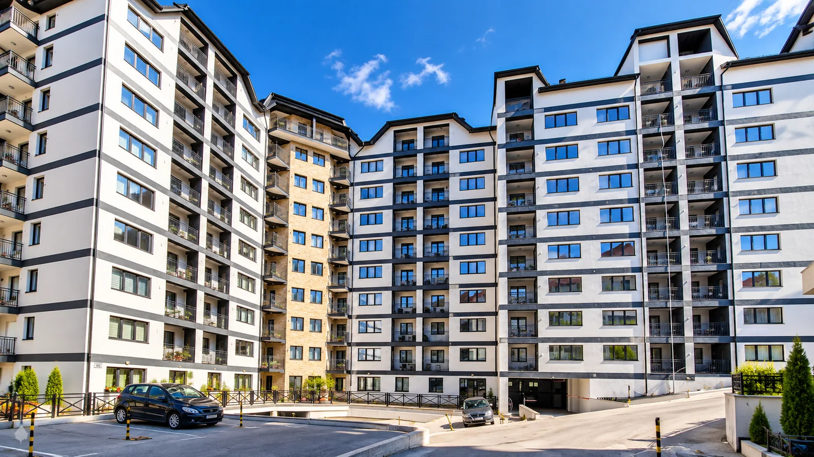
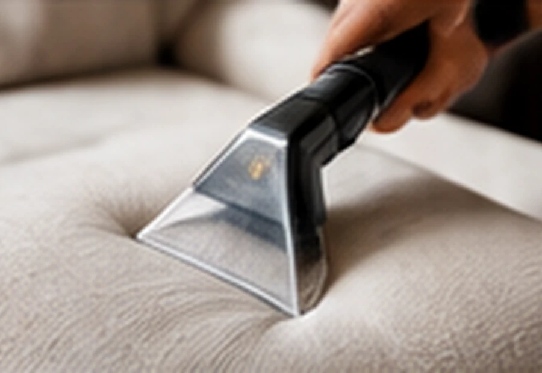
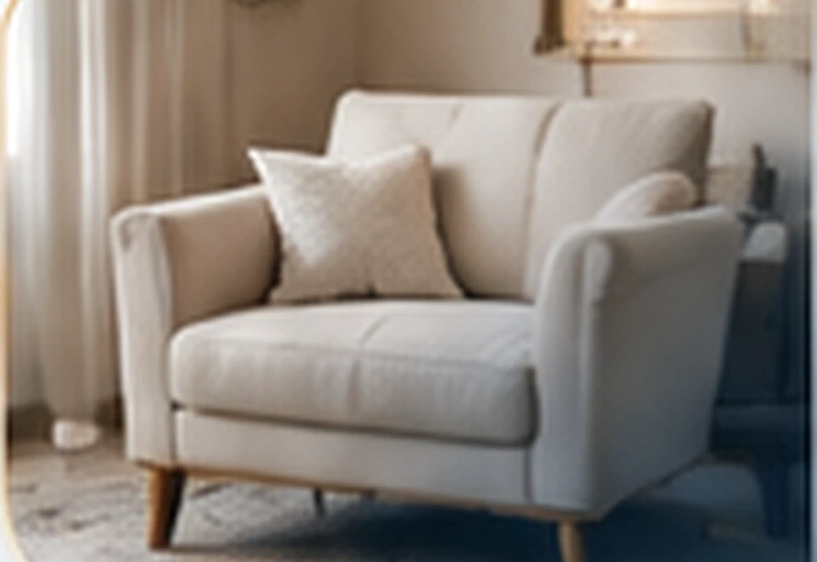

Brza reakcija
Efikasna komunikacija i koordinacija intervencija.

Profesionalno upravljanje, održavanje i čistoća okruženja za bezbrižan život na Zlatiboru.
Efikasna komunikacija i koordinacija intervencija.
Preglednost dokumentacije i troškova zajednice.
Organizacija potrebnih radova i popravki.
Kontakt sa upravnikom kada vam je potreban.
Dva stvarna objekta · ostale fotografije su demo prikazi
Video mašinskog čišćenja i prikaz intervencije na zajedničkoj rasveti.
DODATNA USLUGA
Pored upravljanja stambenim zajednicama, NINA 22 pruža i usluge dubinskog čišćenja nameštaja. Za detalje i termin, pošaljite nam upit.
Pošaljite upit

NINA 22 · ZLATIBOR
NINA 22 je agencija za upravljanje i održavanje stambenih zajednica na Zlatiboru. Marina Ponjavić, profesionalni upravnik, fokusira se na organizaciju, komunikaciju i svakodnevne potrebe objekata.
STOJIMO VAM NA RASPOLAGANJU
Pišite nam za upravljanje zgradom, održavanje ili dubinsko čišćenje. Pripremite poruku, pa je pošaljite sa svog emaila.